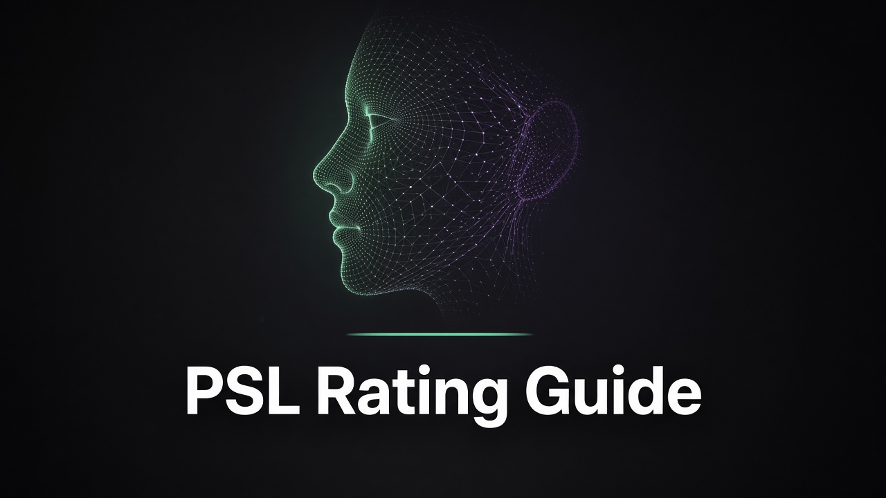
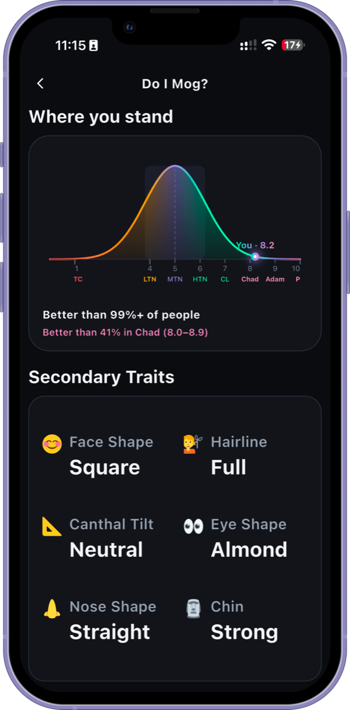
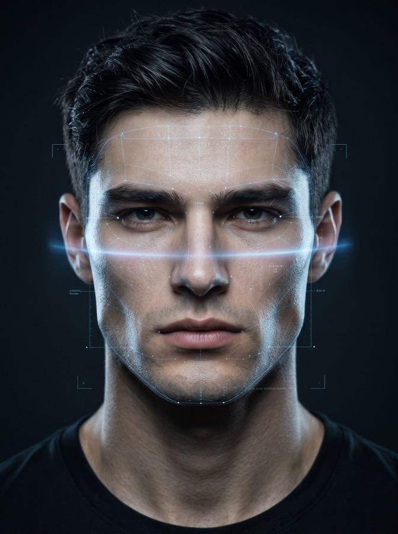

PSL Rating, What Is It? The Complete PSL Rating Guide

If you’ve spent any time on looksmaxxing TikTok, Reddit, or face-rating apps, you’ve seen PSL rating everywhere — Chad, Chadlite, Normie, Sub5. This guide explains what a PSL rating is, how the scale works, what it actually measures, and how to use it as a useful baseline instead of a personality verdict.
What does PSL stand for?
PSL started as shorthand for three old aesthetics forums (PUAHate, SlutHate, and Lookism). Over time, the name stuck to the attractiveness rating system those communities used — a way to rank facial looks on a shared ladder instead of a vague “hot or not.”
Today, “PSL rating” usually means: a structured face score plus a band label (like Normie or Chad) that tells you roughly where you sit on that ladder.
What is a PSL rating?
A PSL rating is a looks-focused score for facial attractiveness. It’s meant to estimate how your face reads against common beauty cues — harmony, structure, dimorphism, and detail features — then map that into a tier.
Think of it less like a personality test and more like a snapshot of facial aesthetics: useful for spotting strengths and weak points, not for deciding your worth.

Short version: PSL rating = “Where does this face sit on the attractiveness ladder?”
The PSL scale explained
Exact cutoffs vary by community and app, but most guides use a roughly 0–8 (sometimes stretched toward 10) distribution. Here’s the common map:

0–2 — Very low / Subhuman band
Strong structural issues, severe disharmony, or major feature imbalance. Rare at the extreme end. Online slang here is harsh; treat it as “high room to improve,” not a life sentence.
3 — Low-tier Normie
Below-average face with noticeable weak points (soft jaw, high facial fat, asymmetry, or feature clash). Still a normal range for many people — and very trainable with skincare, fat loss, hair, posture, and photo quality.
4 — Mid-tier Normie
Average. Balanced enough that nothing screams, but nothing mogs either. Most of the population lives around here. Small upgrades (skin, grooming, lighting, body fat) often move the needle more than people expect.
5 — High-tier Normie / Chadlite
Clearly above average. Good harmony, cleaner structure, stronger first impression. You’ll stand out in everyday environments without looking like a model billboard.
6 — Chad / Stacy
Top-tier facial attractiveness: sharp structure, strong dimorphism (for men), high harmony, and features that hold up across angles. Rare. In looksmaxxing slang, this is the classic “Chad” band.
7–8 — Elite / God-tier
Extremely rare faces — supermodel / elite actor territory. Near-ideal proportions and feature quality. Most people will never land here, and that’s fine; progress from 4 → 5.5 is already a huge glow-up.
What does a PSL rating measure?
Serious raters (and modern AI face apps) usually weigh four buckets:
- Harmony — do the eyes, nose, lips, and jaw sit in balance?
- Angularity / structure — jawline, cheekbones, brow, facial fat
- Dimorphism — how clearly masculine or feminine the face reads
- Detail features — skin, under-eyes, eyebrows, teeth, nose shape, contrast
A strong jaw alone doesn’t make a high PSL rating. A soft feature can still score well if overall harmony is excellent. That’s why one “fix” rarely tells the whole story.

PSL rating vs Attractiveness Score
People use the terms interchangeably online, but they’re slightly different in practice:
- Attractiveness Score — usually a continuous number (for example 7.8 / 10)
- PSL band — the ladder label that number falls into (Normie, Chadlite, Chad…)
In iMog, you get both: a clear Attractiveness Score plus a PSL-style band, so you can see the number and the tier language people actually search for.
How to get a more accurate PSL rating
The score is only as good as the photo. Before you spiral over a number:

- Use a straight-on front face (no tilt, no selfie angle)
- Soft, even front lighting — avoid harsh overhead bathroom light
- Hair off the forehead and jawline
- Neutral expression, no beauty filter
- Retake if the first scan feels obviously wrong
For a full checklist, see How to Take a Better Face Scan for Your Attractiveness Score.
How to use your PSL rating the right way
A PSL rating is a baseline, not a destiny. The useful move is:
- Note your current band and top weak points
- Pick 2–3 high-ROI habits (skin, sleep, body fat, posture, hair)
- Rescan after a real streak — not after one good selfie
- Track Current vs Goal so progress is visible
That’s the loop iMog is built for: scan → understand your stand → follow a short plan → rescan and climb.
Key takeaway: Don’t chase “perfect PSL.” Chase a clearer face, better habits, and a score that moves for the right reasons.
FAQ
Is PSL rating scientific?
It’s informed by real aesthetic cues (symmetry, proportions, dimorphism), but it’s not a clinical medical score. Treat it as a structured opinion system — especially useful when paired with consistent photos and AI breakdowns.
What is a good PSL rating?
Roughly: 4 is average, 5 is strong everyday attractive, 6+ is rare. “Good” depends on your starting point. Moving from 3.5 → 4.8 can change how people read your face more than obsessing about a 7 you’ll never need.
Can you improve your PSL rating?
Yes — within limits. Softmaxxing (skin, grooming, fat loss, style, posture, photo skill) moves most people. Hardmaxxing is a different conversation and should never be the first step. Start with a clean scan and a short plan.
Ready to see where you stand? Scan your face in iMog, get your Attractiveness Score and PSL band, then follow a focused plan built around your weak points.
Ready to scan your face?
Get your Attractiveness Score, PSL band, and a short plan in the iMog app.
Get the app